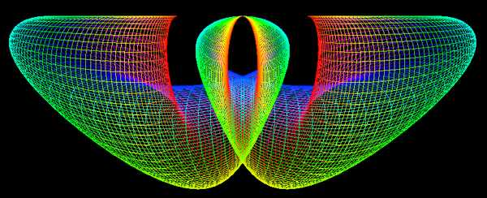
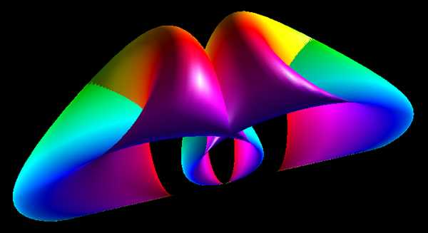
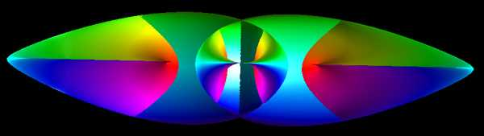
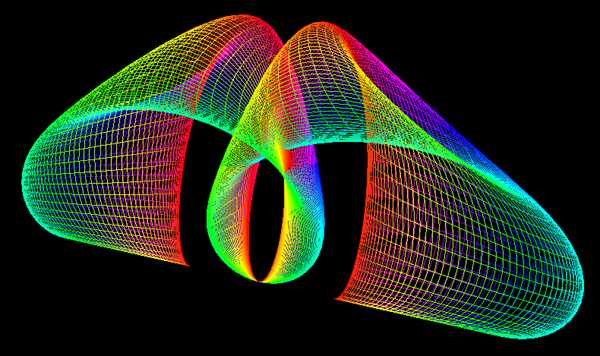

Bent Horns
Contributed by Roger Bagula
Graphics by
Paul Bourke
May 2003
x = (2 + cos(u)) (v/3 - sin(v))
y = (2 + cos(u - 2 PI / 3)) (cos(v) - 1)
z = (2 + cos(u + 2 PI / 3)) (cos(v) - 1)
-pi <= u <= pi
-2pi <= v <= 2pi



